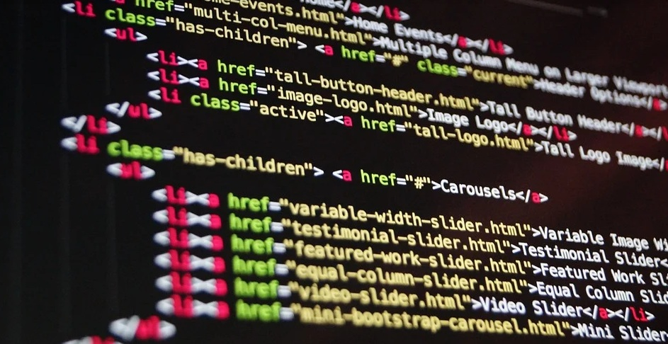

This module introduces the @counter-style rule, which allows authors to define their own custom counter styles for use with CSS list-marker and generated-content counters [CSS-LISTS-3]. It also predefines a set of common counter styles, including the ones present in CSS2 and CSS2.1. CSS is a language for describing the rendering of structured documents (such as HTML and XML) on screen, on paper, in speech, etc. 
This section describes the status of this document at the time of its publication. Other documents may supersede this document. A list of current W3C publications and the latest revision of this technical report can be found in the W3C technical reports index at https://www.w3.org/TR/. This document was produced by the CSS Working Group as a Candidate Recommendation. This document is intended to become a W3C Recommendation. This document will remain a Candidate Recommendation at least until 1 February 2018 in order to ensure the opportunity for wide review. GitHub Issues are preferred for discussion of this specification. When filing an issue, please put the text “css-counter-styles” in the title, preferably like this: “[css-counter-styles] …summary of comment…”. All issues and comments are archived, and there is also a historical archive.